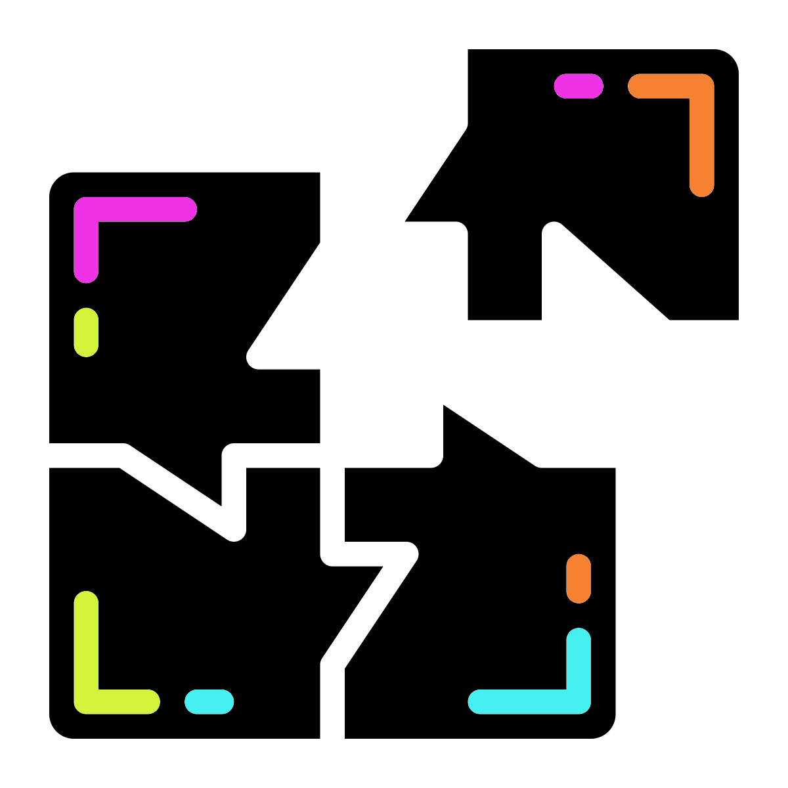

Chapter 16 Megahit Assembly

We will use our stitched and unstitched reads to produce an assembly withMEGAHIT.
16.1 MEGAHIT

Create a new directory to store our assembly in.
cd ..
mkdir 6-Assembly
cd 6-AssemblyNow run the metagenome assembler MEGAHIT using our newly stitched read data.
megahit \
-r ../5-Stitched/K1.extendedFrags.fastq.gz \
-1 ../5-Stitched/K1.notCombined_1.fastq.gz \
-2 ../5-Stitched/K1.notCombined_2.fastq.gz \
-o K1 \
-t 12 \
--k-list 29,49,69,89,109,129,149,169,189Parameters

-r: Single-end reads to be used for assembly. We are using our successfully stitched reads.-1: Forward reads of paired end reads to be used for assembly. We are using the reads that did not stitch as they still have useful information.-2: Reverse reads of paired end reads to be used for assembly. We are using the reads that did not stitch as they still have useful information.-o: Output directory.-t: Number of threads to be used for process.--k-list: K-mer list.
The k-mer list instructs MEGAHIT to first generate an assembly using a k-mer size of 29 bp and when that is complete, integrate the results into an assembly using a k-mer size of 49 bp, and so on up to a final iteration using a k-mer size of 189 bp. This large range of k-mer lengths should give us a good assembly, given the data. However, it may take a while to run. This might be a good time to read on or take a break whilst the command runs.
If you need a command prompt (your current one is busy because MEGAHIT is running), right click on the main screen, choose Applications -> Shell -> bash.
Once the assembly is completed, we can look at the output FASTA file containing the contigs:
less K1/final.contigs.faThere is not much to see. When happy, quit the less (q) and carry on to QUAST.
16.2 QUAST

We can generate some metrics based on the assembly with QUAST.
16.2.1 QUAST: conda

Due to a python version conflict we need to use another conda environment.
Open a new terminal (right click on the main screen, choose Applications -> Shell -> bash) and run the below.
#use script to activate conda env
. usegenoassessWe will use QUAST for genome contiguity assessment but first we will change directory to 6-Assembly and create a directory for the QUAST output.
#Change directory
cd ~/6-Assembly
#Create QUAST output directory
#The option -p will create a directory and any required
#parent directories
mkdir -p quast/K116.2.3 QUAST: visualise

QUAST will run relatively quickly. Once complete view the output with firefox.
firefox quast/K1/report.htmlThe report tells us quite a bit about the assembly quality. Two definitions that you may not be aware are N50 and L50. To calculate these values:
- Order the contigs from largest to smallest.
- Total up the sizes from biggest downwards.
- The contig we reach where our total is at least 50% of the size of the whole assembly is the N50 contig.
- N50 equals the length of the N50 contig.
- L50 is the number of contigs with a length equal to or greater than N50.
16.2.4 QUAST: MCQs

- What is the total length of the assembly?
- How many contigs does the assembly consist of?
- What is the GC% of the assembly?
- What is the N50 of the assembly?
- What is the L50 of the assembly?
- what is the length of the largest contig?
Questions - How do the contig metrics compare to the original reads?
16.3 Metagenome assembly summary

We now have an assembly. It is not a brilliant one due to us only having used 1 million reads. In real analysis we would prefer fewer but longer contigs. We will explore some tools we can use with our metagenome assembly in the next chapters.
There is also a metaQUAST specifically for metagenome assemblies but it requires reference assemblies be provided.